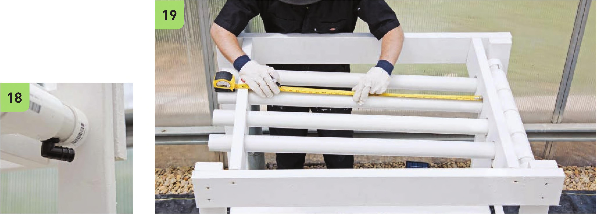
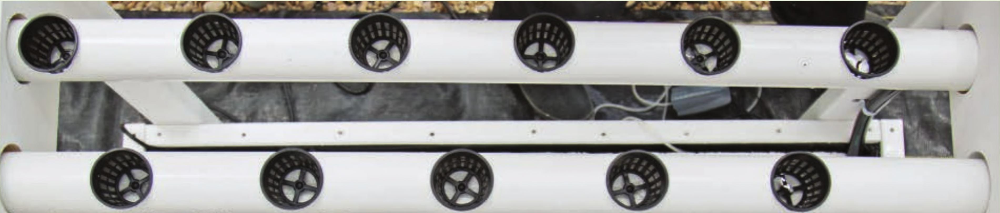

17 Insert the 37" PVC segments into the crossbeams. These will be the growing channels. 18 Attach the manifold to the 37" PVC channels. The W drainage elbow should be on the lower side of the manifold. Do not glue it yet. 19 Mark the placement of the net pots in the channels. The net pots in this design are 6" apart within the channel and are arranged in a checkerboard pattern to create additional space between plants from neighboring channels. DRILLING REFERENCE _ _| . I© © @ II HYDROPONIC GROWING SYSTEMS 77

